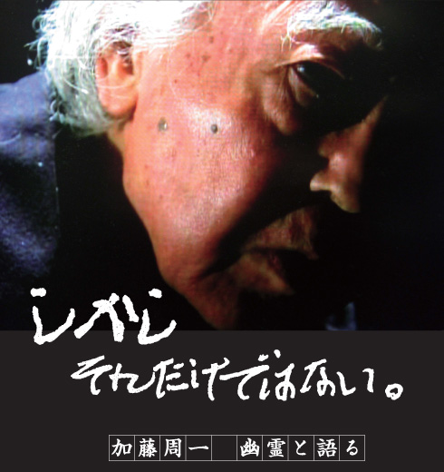

Main Contents

DVD 発売中！ Blu-ray は、9月22日（水） 発売！！
出演：加藤周一
製作: 加藤周一映画製作実行委員会 矢島翠 / 桜井均
プロデューサー: 桜井均 / 石紀美子 / 河邑厚徳
監督: 鎌倉英也
撮影: 中野英世 照明: 芝丕東 編集: 鈴木良子 音響効果: 斎藤實
協力: スタジオジブリ / ウォルト・ディズニー・ジャパン
2009年 日本映画 ドキュメンタリー 95分（予定）
プロデューサー: 桜井均 / 石紀美子 / 河邑厚徳
監督: 鎌倉英也
撮影: 中野英世 照明: 芝丕東 編集: 鈴木良子 音響効果: 斎藤實
協力: スタジオジブリ / ウォルト・ディズニー・ジャパン
2009年 日本映画 ドキュメンタリー 95分（予定）